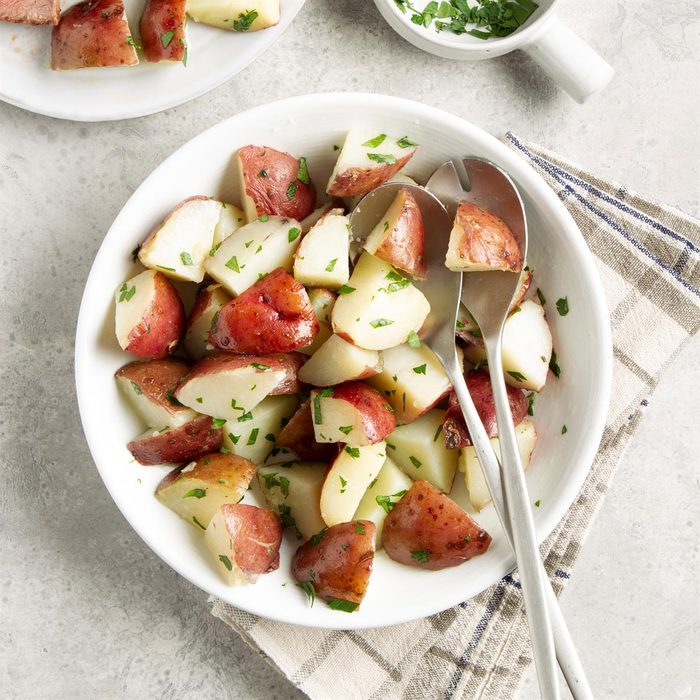

Boiled Potatoes

Description
This method for hard boiling potatoes is simple and produces a tender and delicious potatoes every time! Cooking times vary depending on the type of cooktop (electric, gas, and induction) and size of potatoes, among other factors. Play around with the timing based on your boiled potatoes preferences.
Ingredients
Steps
- Place potatoes in a Dutch oven or stockpot and cover with water. Cover and bring to a boil over medium-high heat; cook until tender, 15-30 minutes. Drain well. If desired, quarter eight potatoes and toss with butter and parsley. Refrigerate remaining potatoes.